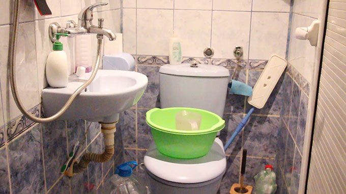

проект
Оценка на равноправния достъп до вода и санитария в България
Признаването на достъпа до вода и санитария за човешко право през 2010 г., потвърди задължението на правителствата да осигурят достъп до питейна вода и санитарни услуги, които да са налични, физически достъпни, високо качествени и безопасни, приемливи от гледна точка на гарантиране на човешкото достойнство и уединение, както и финансово достъпни за всички без дискриминация.
Акцентът върху равнопоставеността е много силно заложен в Дневен ред за устойчиво развитие 2030, особено при 6-та Цел за устойчиво развитие за вода и санитария, където се поставят амбициозни задачи относно:
- Задача 6.1. До 2030 г., да се постигне пълен и равноправен достъп до безопасна и финансово достъпна питейна вода за всички;
- Задача 6.2. До 2030 г., да се постигне адекватен и равноправен достъп до санитария и хигиена за всички и да се преустанови дефектацията на открито, като се обърне специално внимание на нуждите на момичетата и жените и на хората в уязвимо положение.
За пан-Европейския регион, Протоколът за вода и здраве, администриран от UNECE 1 - WHO/Europe 2 представлява стабилна рамка за прилагане на практика на човешкото право за вода и санитария и за постигането на Целите за устойчиво развитие. Протоколът изисква от държавите-членки да осигурят достъп до вода и санитария за всеки и с особена загриженост да промоцират равноправния достъп до вода и санитария „за всеки човек от населението, особено хората с увреждания или в социална изолация“. През юни 1999 г., България подписа Протокол за вода и здраве на UNECE 3 -WHO/Europe 4, но все още не го е ратифицирала.

Трите критични фактора за гарантиране на равноправен достъп до вода и санитария са: намаляване на географските различия; преодоляване на препятствията за достъпа за уязвимите и маргинализирани групи; решаване на проблемите, свързани с финансовата достъпност, както са разработени в детайли в публикацията Никой не е изоставен: Добри практики за осигуряване на равноправен достъп до вода и санитария в пан-Европейския регион 5 (UNECE, WHO/Europe, 2012).

Оценъчната карта за равноправен достъп 6, разработена под Протокола за вода и здраве, е аналитичен инструмент, който може да подпомогне правителствата и другите заинтересовани страни при определяне на базовата статус на равноправен достъп до вода и санитария чрез процес на самооценка, идентифициране на приоритетите и обсъждане на мерките, които трябва да бъдат взети вбъдеще.
Насоките за разработване на планове за действие за постигане на равноправен достъп до вода и санитария 7, приети от държавите-членки на Протокола през ноември 2016 г., целят да подпомогнат страните при привеждане в действие на приоритетите идентифицирани чрез самооценката с цел да се претопи различието в качеството на услугите осигуряваща достъп до питейна вода и санитария.
През април 2017 г., Министерството на здравеопазването, на основание неговите приоритети за защита на човешкото здраве, реши да подкрепи фондация „Земя завинаги“ за изпълнението на проект за подобряване на равноправния достъп до ебзопасна питейна вода.
Цели на проекта
Фаза 1 – Провеждане на самооценка на ситуацията с равноправния достъп до вода и санитария
- Постигане на по-добро разбиране на ситуацията и предизвикателствата пред равноправния достъп до вода и санитария;
- Идентифициране на подходящи заинтересовани страни, които да спомогнат за подобряване на равноправния достъп до вода и санитария и за повишаване на информираността по равноправния достъп;
- Разработване на подробен доклад за съществуващите мерки по политики за преодоляване на неравенствата при достъпа до вода и санитария, както и идентифициране на липси в информацията и политиките за осигуряване на равноправен достъп до вода и санитария.
Самооценката ще се проведе на основата на Оценъчната карта за равноправен достъп.
Фаза 2 – Разработване на План за действие за осигуряване на равноправен достъп до вода и санитария
- Дефиниране на приоритетни области за действие за подобряване на равноправния достъп до вода и санитария, както и приоритетни мерки и свързаните с прилагането им разходи;
- Идентифициране на благоприятни възможности за интегриране на приоритетни мерки за равноправен достъп в съществуващи или планирани планове, програми и проекти;
- Набелязване на възможни начини за постигане на целите, вкл. срокове и потенциални източници за финансиране.
Разработването на План за действие за равноправен достъп ще следва изискванията на Насоки за разработване на План за действие за равноправен достъп до вода и санитария.

––––––––––––––––––––––––––––––
1 United Nations Economic Commission for Europe
2 Regional Office for Europe of the World Health Organization
3 United Nations Economic Commission for Europe
4 Regional Office for Europe of the World Health Organization
5 The publication No one left behind: Good practices to ensure equitable access to water and sanitation in the pan-European region is available at: http://www.unece.org/index.php?id=29170
6 The publication The Equitable Access Score-card: Supporting policy processes to achieve the human right to water and sanitation is available at: http://www.unece.org/index.php?id=34032
7 The publication Guidance Note on the Development of Action Plans to Ensure Equitable Access to Water and Sanitation is available at: http://www.unece.org/index.php?id=44284&L=0